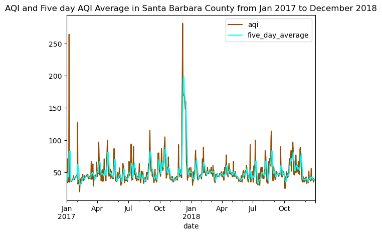
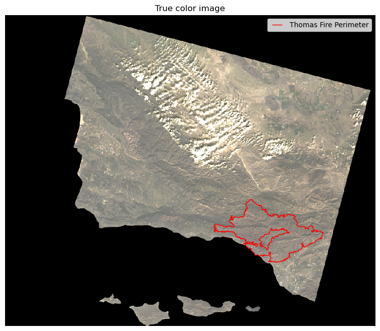
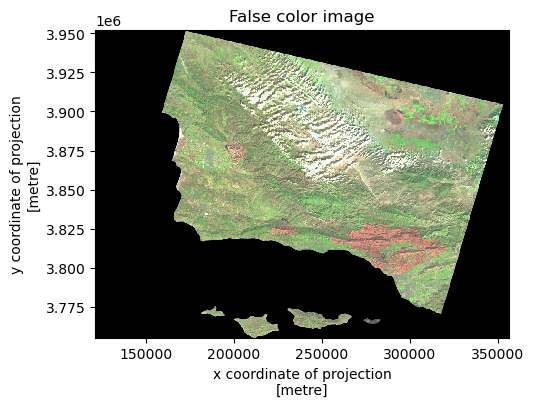
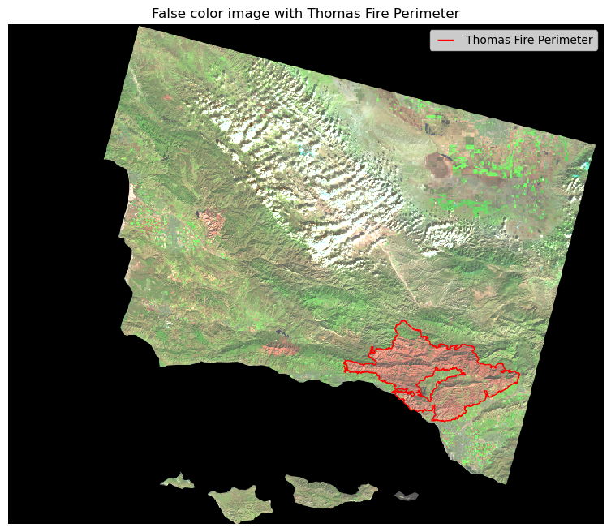

More information on this analysis can be found here
Both tabular and raster data allow us to see changes in data in different ways. Here, we will use an AQI tabular dataset that reports air quality levels in the US, along with landsat satelite data to see if air quality effects from the Thomas Fire can be seen by both numeric data as well as visual data.
Image above shows dark clouds caused by the Thomas fire over the ocean in December 2017.
About
Purpose:
The Thomas Fire caused extensive damage in both Ventura and Santa Barbara County in December of 2017. As with all fires, the decrease in air quality index is a a direct effect of wildfires. This project will explore how the air quality index was effected by the Thomas fire. We will look into both numeric AQI data of santa barbara, as well as a collection of bands from the Landsat 8 Satellite. Looking into this different areas will allow us to further investigate how much aqi was affected, and from what bands the effect could be seen.
Highlights of analysis:
fetch AQO data, landsat sattelite data, and california fire perimeter shapefile from an online repository
Clean data with consistent crs’ for plotting purposes
Time series analysis with aqi data
Visualize landsat raster data with false and true color images
Compare landsat raster with Thomas fire perimeter
Data
1. Landsat Data:
A simplified collection of bands (red, green, blue, near-infrared and shortwave infrared) from the Landsat Collection 2 Level-2 atmosperically corrected surface reflectance data, collected by the Landsat 8 satellite. The data was accessed and pre-processed in the Microsoft Planetary Computer to remove data outside land and coarsen the spatial resolution. Data can be found in the Landsat Collection in the Microsoft Planetary Computer here.
2.CA fire perimeter shapefile:
A shapefile of fire perimeters in California during 2017. The complete file can be accessed in the CA state geoportal.
3.AQI data:
A daily reporting of AQI by county for 2017 and 2018. Data reports an AQI value, approximately every 3 -7 days, for counties in every state. Also reports the category for AQI, i.e. “good”. Data reports an AQI value, approximately every 3 -7 days, for 804 counties across every state (as well as Country of Mexico, Puerto Rico, and Virgin Islands).
Citations:
California State Geoportal. 2023. California Fire Perimeters (All). https://gis.data.ca.gov/datasets/CALFIRE-Forestry::california-fire-perimeters-all-1/about (Accessed 2023-11-28).
NASA, USGS. 2023. Landsat Collection 2 Level-2. Hosted by Microsoft Planetary Computer.https://planetarycomputer.microsoft.com/dataset/landsat-c2-l2 (Accessed 2023-11-22).
United States Environmental Protection Agency. Daily AQI by County.https://aqs.epa.gov/aqsweb/airdata/download_files.html#AQI (Accessed 2023-11-22).
Analysis
Import Packages and the Data
Code
import pandas as pdimport numpy as np import matplotlib.pyplot as pltimport osimport matplotlib.patches as mpatches # for creating legendsimport xarray as xrimport rioxarray as rioxrimport geopandas as gpdfrom rasterio.features import rasterize #for reasterizing polygonsimport matplotlib.lines as mlines
Code
#read in aqi data for 2017 and 2018aqi_17 = pd.read_csv('https://aqs.epa.gov/aqsweb/airdata/daily_aqi_by_county_2017.zip') # 2017 dataaqi_18 = pd.read_csv('https://aqs.epa.gov/aqsweb/airdata/daily_aqi_by_county_2018.zip') # 2018 data# read in shapefile of califronia fire/ perimtersca_fire = gpd.read_file('data/California_Fire_Perimeters_2017/California_Fire_Perimeters_2017.shp') #read in landsat datalandsat_fp = os.path.join(os.getcwd(), 'data','landsat8-2018-01-26-sb-simplified.nc') landsat = rioxr.open_rasterio(landsat_fp)
Geographical Context of Data
Select data pertaining to area of interest (Santa Barbara) and merge data for our years of interest ( 2017 and 2018)
Code
# concatenate 2017 and 2018 data using concat to get one dataframe for all aqi dataaqi = pd.concat([aqi_17, aqi_18])#only select data in Santa barbara since that is where Thomas fire was aqi_sb = aqi[aqi["county Name"] =="Santa Barbara"].drop(columns = ['State Name','county Name','State Code','County Code']) #select Santa barbara and drop unnecessary columns#only select thomas fire perimeterthomas_fire = ca_fire[ca_fire.FIRE_NAME =="THOMAS"]#check to make sure there is now only one unqiue value in thomas _fireprint(thomas_fire.FIRE_NAME .nunique())
1
Code
aqi.head()
State Name
county Name
State Code
County Code
Date
AQI
Category
Defining Parameter
Defining Site
Number of Sites Reporting
0
Alabama
Baldwin
1
3
2017-01-01
21
Good
PM2.5
01-003-0010
1
1
Alabama
Baldwin
1
3
2017-01-04
22
Good
PM2.5
01-003-0010
1
2
Alabama
Baldwin
1
3
2017-01-10
19
Good
PM2.5
01-003-0010
1
3
Alabama
Baldwin
1
3
2017-01-13
30
Good
PM2.5
01-003-0010
1
4
Alabama
Baldwin
1
3
2017-01-16
16
Good
PM2.5
01-003-0010
1
Data Exploration
Explore information on all three datasets to understand data setup
Aqi dataset
Code
print("Number of unique values : \n", aqi_sb.nunique(), "\n") # check number of unique values to get idea on variety of dataprint("Column datatypes:\n ", aqi_sb.dtypes, "\n") # check data types of variables for future referenceprint("Shape of data:", aqi_sb.shape) # check shape of data to see how many columns and observations there are
Number of unique values :
Date 730
AQI 75
Category 5
Defining Parameter 3
Defining Site 12
Number of Sites Reporting 4
dtype: int64
Column datatypes:
Date object
AQI int64
Category object
Defining Parameter object
Defining Site object
Number of Sites Reporting int64
dtype: object
Shape of data: (730, 6)
CA fire perimter shapefile
Code
print("Column names: \n", ca_fire.columns) # check column names to see what the data containsprint("Shape of data:", ca_fire.shape,"\n") # check shape of data to see how many columns and observations there areprint("Column datatypes:\n ", ca_fire.dtypes, "\n") # check data types of variables for future reference
print("The dimmensions of the landsat data are:\n", landsat.dims,"\n") # check file dimmensionsprint("The coordinates of the landsat data are:\n", landsat.coords,"\n") # check coordinates of shapefileprint("The values of the landsat data are:\n", landsat.values, "\n") # values of xarrayprint("The crs of the landsat data is:", landsat.rio.crs) # check crs
The dimmensions of the landsat data are:
Frozen({'y': 731, 'x': 870, 'band': 1})
The coordinates of the landsat data are:
Coordinates:
* y (y) float64 3.952e+06 3.952e+06 ... 3.756e+06 3.755e+06
* x (x) float64 1.213e+05 1.216e+05 ... 3.557e+05 3.559e+05
* band (band) int64 1
spatial_ref int64 0
The values of the landsat data are:
<bound method Mapping.values of <xarray.Dataset>
Dimensions: (y: 731, x: 870, band: 1)
Coordinates:
* y (y) float64 3.952e+06 3.952e+06 ... 3.756e+06 3.755e+06
* x (x) float64 1.213e+05 1.216e+05 ... 3.557e+05 3.559e+05
* band (band) int64 1
spatial_ref int64 0
Data variables:
red (band, y, x) float64 ...
green (band, y, x) float64 ...
blue (band, y, x) float64 ...
nir08 (band, y, x) float64 ...
swir22 (band, y, x) float64 ...>
The crs of the landsat data is: EPSG:32611
Data Cleaning
Aqi dataset
Adjust column names, make data a datetime object, and set index of dataset to be data for future plotting purposes
Code
aqi_sb.columns = aqi_sb.columns.str.lower() #make column names lower caseaqi_sb.columns = aqi_sb.columns.str.replace(' ','_') # reassign column names by substituting an underscore for a spaceaqi_sb.date = pd.to_datetime(aqi_sb.date) # update data column to datetimeaqi_sb = aqi_sb.set_index('date') # change index to be date
Landsat data
Drop Landsat band so we are able to plot landsat raster
Code
# drop band dimension to make data 2Dlandsat_2d = landsat.squeeze().drop('band')landsat_2d # check to make sure band is no longer included
<xarray.Dataset>
Dimensions: (y: 731, x: 870)
Coordinates:
* y (y) float64 3.952e+06 3.952e+06 ... 3.756e+06 3.755e+06
* x (x) float64 1.213e+05 1.216e+05 ... 3.557e+05 3.559e+05
spatial_ref int64 0
Data variables:
red (y, x) float64 ...
green (y, x) float64 ...
blue (y, x) float64 ...
nir08 (y, x) float64 ...
swir22 (y, x) float64 ...
PROJCS["WGS 84 / UTM zone 11N",GEOGCS["WGS 84",DATUM["WGS_1984",SPHEROID["WGS 84",6378137,298.257223563]],PRIMEM["Greenwich",0],UNIT["degree",0.0174532925199433,AUTHORITY["EPSG","9122"]],AUTHORITY["EPSG","4326"]],PROJECTION["Transverse_Mercator"],PARAMETER["latitude_of_origin",0],PARAMETER["central_meridian",-117],PARAMETER["scale_factor",0.9996],PARAMETER["false_easting",500000],PARAMETER["false_northing",0],UNIT["metre",1],AXIS["Easting",EAST],AXIS["Northing",NORTH],AUTHORITY["EPSG","32611"]]
semi_major_axis :
6378137.0
semi_minor_axis :
6356752.314245179
inverse_flattening :
298.257223563
reference_ellipsoid_name :
WGS 84
longitude_of_prime_meridian :
0.0
prime_meridian_name :
Greenwich
geographic_crs_name :
WGS 84
horizontal_datum_name :
World Geodetic System 1984
projected_crs_name :
WGS 84 / UTM zone 11N
grid_mapping_name :
transverse_mercator
latitude_of_projection_origin :
0.0
longitude_of_central_meridian :
-117.0
false_easting :
500000.0
false_northing :
0.0
scale_factor_at_central_meridian :
0.9996
spatial_ref :
PROJCS["WGS 84 / UTM zone 11N",GEOGCS["WGS 84",DATUM["WGS_1984",SPHEROID["WGS 84",6378137,298.257223563]],PRIMEM["Greenwich",0],UNIT["degree",0.0174532925199433,AUTHORITY["EPSG","9122"]],AUTHORITY["EPSG","4326"]],PROJECTION["Transverse_Mercator"],PARAMETER["latitude_of_origin",0],PARAMETER["central_meridian",-117],PARAMETER["scale_factor",0.9996],PARAMETER["false_easting",500000],PARAMETER["false_northing",0],UNIT["metre",1],AXIS["Easting",EAST],AXIS["Northing",NORTH],AUTHORITY["EPSG","32611"]]
GeoTransform :
121170.0 270.0 0.0 3952530.0 0.0 -270.0
array(0)
red
(y, x)
float64
...
add_offset :
0.0
coordinates :
time
scale_factor :
1.0
_FillValue :
0.0
[635970 values with dtype=float64]
green
(y, x)
float64
...
add_offset :
0.0
coordinates :
time
scale_factor :
1.0
_FillValue :
0.0
[635970 values with dtype=float64]
blue
(y, x)
float64
...
add_offset :
0.0
coordinates :
time
scale_factor :
1.0
_FillValue :
0.0
[635970 values with dtype=float64]
nir08
(y, x)
float64
...
add_offset :
0.0
coordinates :
time
scale_factor :
1.0
_FillValue :
0.0
[635970 values with dtype=float64]
swir22
(y, x)
float64
...
add_offset :
0.0
coordinates :
time
scale_factor :
1.0
_FillValue :
0.0
[635970 values with dtype=float64]
CA fire perimter shapefile
Make sure crs of thomas fire shapefile is same as the crs for the landsat raster, change crs if not the same.
Code
thomas_fire= thomas_fire.to_crs(landsat_2d.rio.crs) # change crs of thomas fire to match landsat crs
Code
#check to make sure crs' match/thomas_fire.crs == landsat.rio.crs
True
Plotting
Analyze AQI Values in data to see if AQI spikes are present during Thomas Fire
Plot five day average of aqi and daily aqi to see different trends
Code
aqi_sb['five_day_average'] = aqi_sb.aqi.rolling('5D').mean() # create new column called 'five_day_average' in aqi_sb data frame that contains a 5 day rolling windowcolors = {'aqi': '#964B00', # pick dark brown for aqi'five_day_average': 'cyan'} # pick cyan for five day averageaqi_sb.plot(use_index =True, # include index as x axis y = ['aqi','five_day_average'], # plot aqi and five_day_average color = colors, title ='AQI and Five day AQI Average in Santa Barbara County from Jan 2017 to December 2018') # have colors be pre defined colors dictionary, add title
<AxesSubplot:title={'center':'AQI and Five day AQI Average in Santa Barbara County from Jan 2017 to December 2018'}, xlabel='date'>

We can also use Landsat Collection 2 Level-2 atmosperically corrected surface reflectance data to analyze AQI
Create a true color image by plotting the red, green, and blue variables.
Code
fig, ax = plt.subplots(figsize = (12,8)) # set figure size and axisax.axis('off') # turn x and y axis off# -------------------------landsat_2d[['red', 'green', 'blue']].to_array().plot.imshow(ax = ax,robust =True)thomas_fire.plot(ax = ax,color ='None', edgecolor ='red') # plot california map with black outline thomas_line = mlines.Line2D([], [], color='red', marker='_', # make legend have triangle #update legend name and marker markersize=15, label='Thomas Fire Perimeter', linestyle ='None')#---------------------------# create legendax.legend(handles = [thomas_line], frameon =True, loc ='upper right') # add legend in upper right corner#---------------------------plt.title("True color image")plt.show() # show plot

Create a false color image by plotting the short-wave infrared (swir22), near-infrared, and red variables.
Code
#select short wave, near infrared, and red variables, make an array and plot with robust = Truelandsat_2d[[ 'swir22','nir08', 'red']].to_array().plot.imshow(size =4, robust =True)plt.title("False color image")
Text(0.5, 1.0, 'False color image')

This image looks good, but we want to look closer at the Thomas fire region. We can zoom in on the Thomas fire region to see that the landsat imaage picked up for the region using a false color image.
Code
fig, ax = plt.subplots(figsize = (12,8)) # set figure size and axisax.axis('off') # turn x and y axis off# -------------------------landsat_2d[['swir22','nir08', 'red']].to_array().plot.imshow(ax = ax,robust =True)thomas_fire.plot(ax = ax,color ='None', edgecolor ='red') # plot california map with red outline thomas_line = mlines.Line2D([], [], color='red', marker='_', #make legend symbol be a line and change color to red, add label markersize=15, label='Thomas Fire Perimeter', linestyle ='None')#---------------------------# create legendax.legend(handles = [thomas_line], frameon =True, loc ='upper right') # add legend in upper right corner#---------------------------plt.title("False color image with Thomas Fire Perimeter")plt.show() # show plot

Final Results
The AQI time series graph and landsat image above both display increased AQI levels during the Thomas fire. The time series graph has a spike in AQI during December of 2017/ January 2018. This corresponds to the time of the Thomas Fire, when we would expect AQI to increase. The false color image above also shows a decrease in air quality in the band that matches the coordinates of the Thomas fire. From both these plots, we can see that the air quality was significantly effected by the Thomas Fire. This change is evident in both numeric data reporting AQI levels, as well as satellite data.